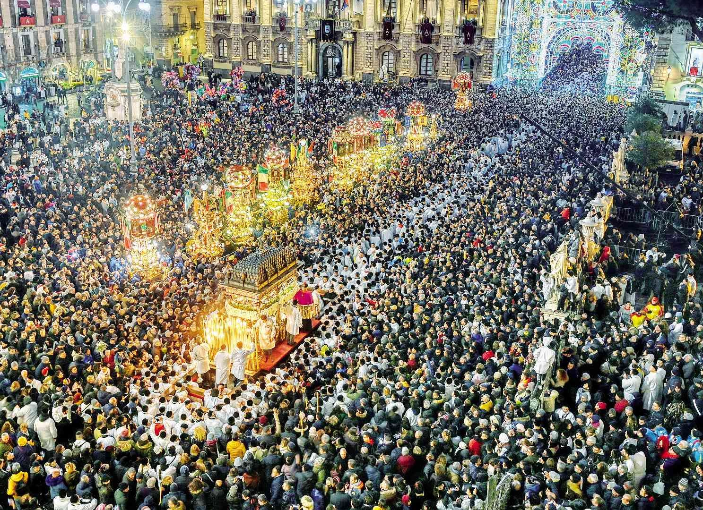
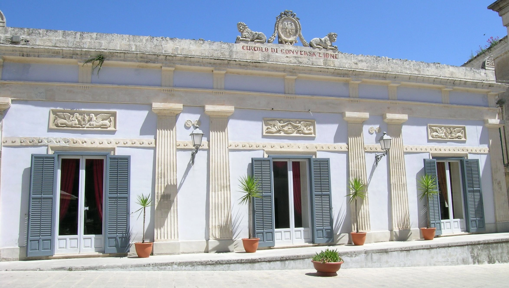
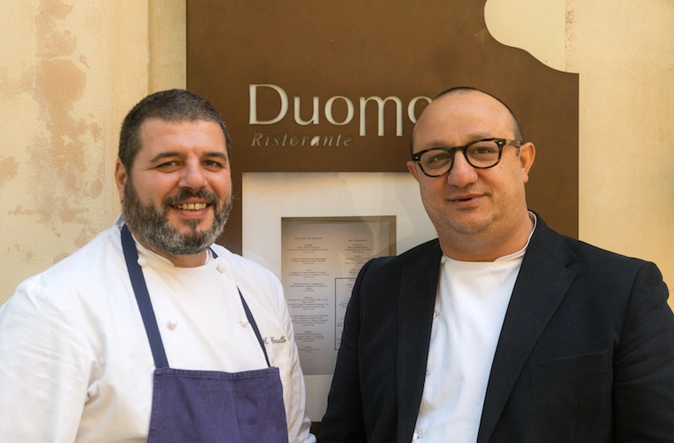
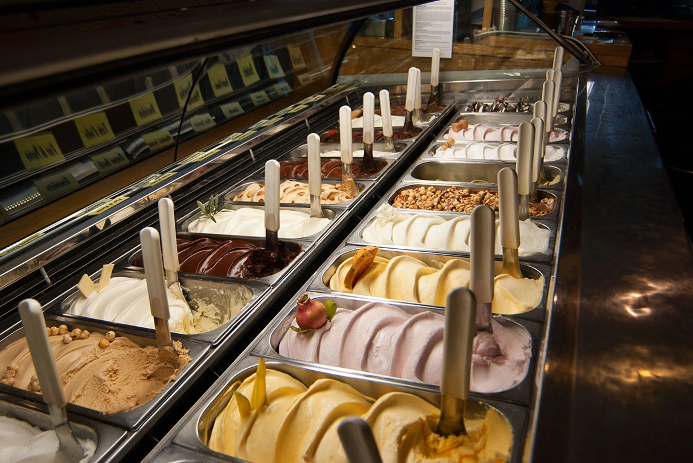
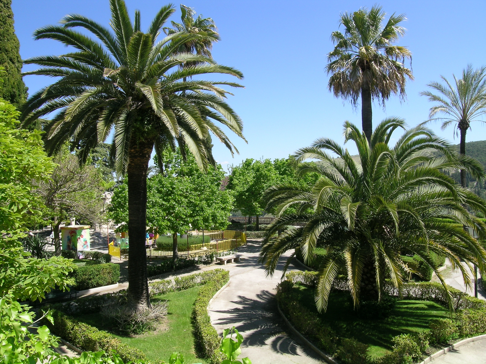
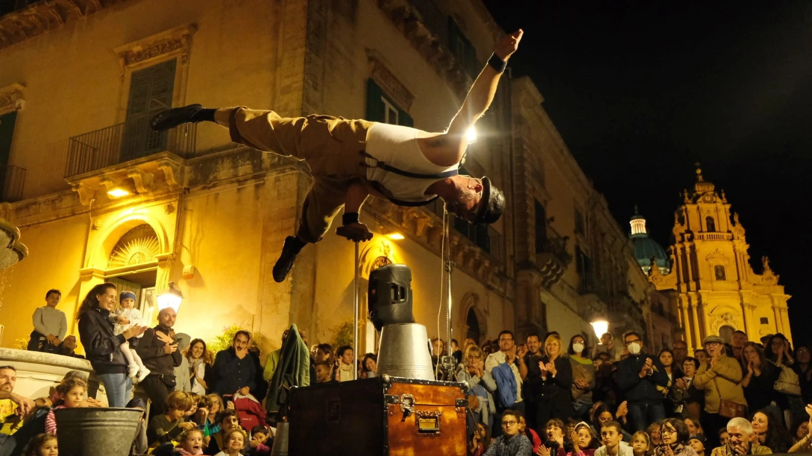

Ragusa
Ragusa è una città barocca siciliana dichiarata Patrimonio UNESCO, composta da due nuclei: la città alta (Ragusa) e il borgo antico di Ibla. Conosciuta a livello internazionale anche grazie alla serie televisiva Il Commissario Montalbano, affascina per i suoi vicoli, le sue chiese e i panorami sulla vallata.
Piazza Duomo
La Piazza del Duomo di Ragusa Ibla è la piazza principale del borgo barocco, dominata dal monumentale Duomo di San Giorgio. È un palcoscenico di pietra color miele circondato da palazzi nobiliari, chiese e caffè, considerato uno degli spazi urbani più suggestivi di tutta la Sicilia.


Duomo di San Giorgio
Il capolavoro del barocco ibleo, progettato da Rosario Gagliardi. Domina la piazza con la sua facciata a torre e una scenografica scalinata, rappresentando il cuore pulsante e visivo di Ragusa Ibla.
Circolo di Conversazione
Un elegante palazzo neoclassico di fine Ottocento, nato come esclusivo punto di ritrovo per la nobiltà locale. I suoi saloni interni, riccamente affrescati, conservano intatto il fascino dell'atmosfera aristocratica siciliana.


Ristorante Duomo
Il regno dello chef bistellato Ciccio Sultano. Nascosto nei vicoli adiacenti alla piazza, offre un viaggio culinario straordinario che destruttura e nobilita le materie prime e le antiche ricette del territorio siciliano.
Gelati DiVini
Una particolarissima gelateria artigianale che ha saputo fondere l'arte fredda con l'enologia locale. Celebre per i suoi gelati al gusto di vino, come il Moscato, il Nero d'Avola o il Brachetto.


Giardini Iblei
Un'oasi verde e curata che si estende all'estremità di Ragusa Ibla. Passeggiando tra viali alberati, palme e chiesette antiche, si gode di un panorama mozzafiato sulla vallata circostante.
Ibla Buskers
Un rinomato festival internazionale che trasforma le piazze e i vicoli del quartiere barocco nel palcoscenico per giocolieri, acrobati e artisti di strada provenienti da tutto il mondo.
